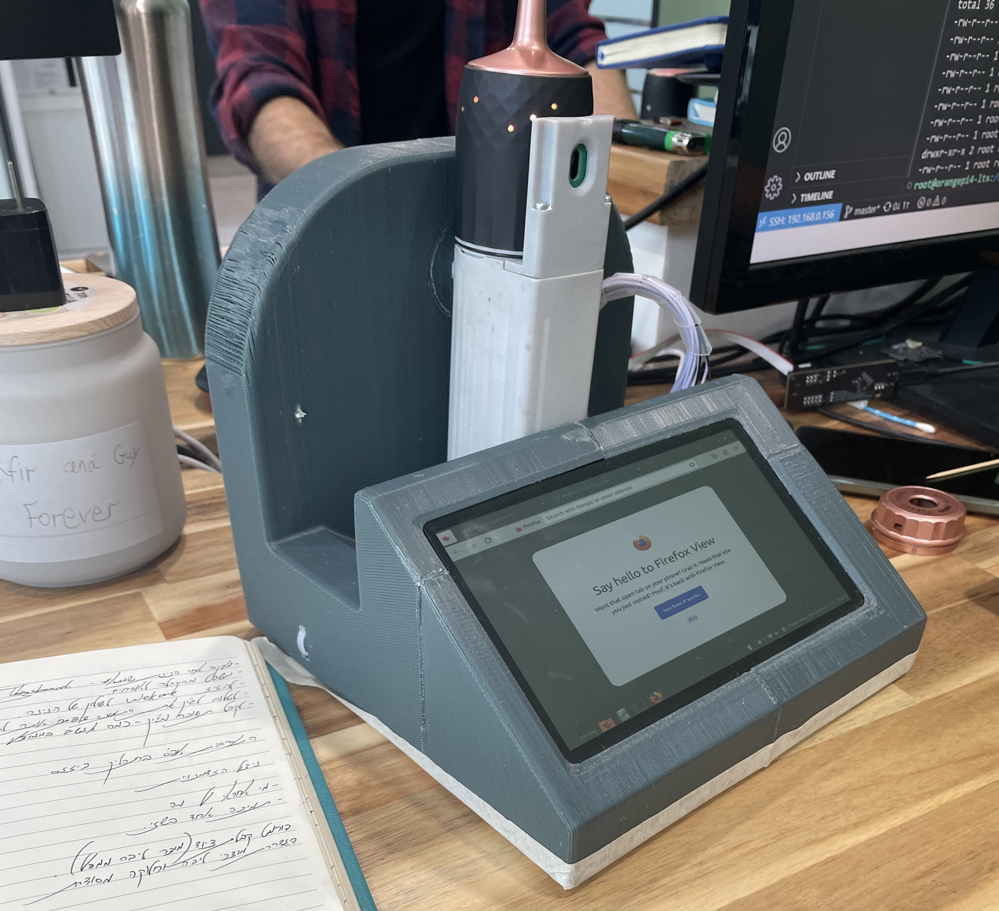
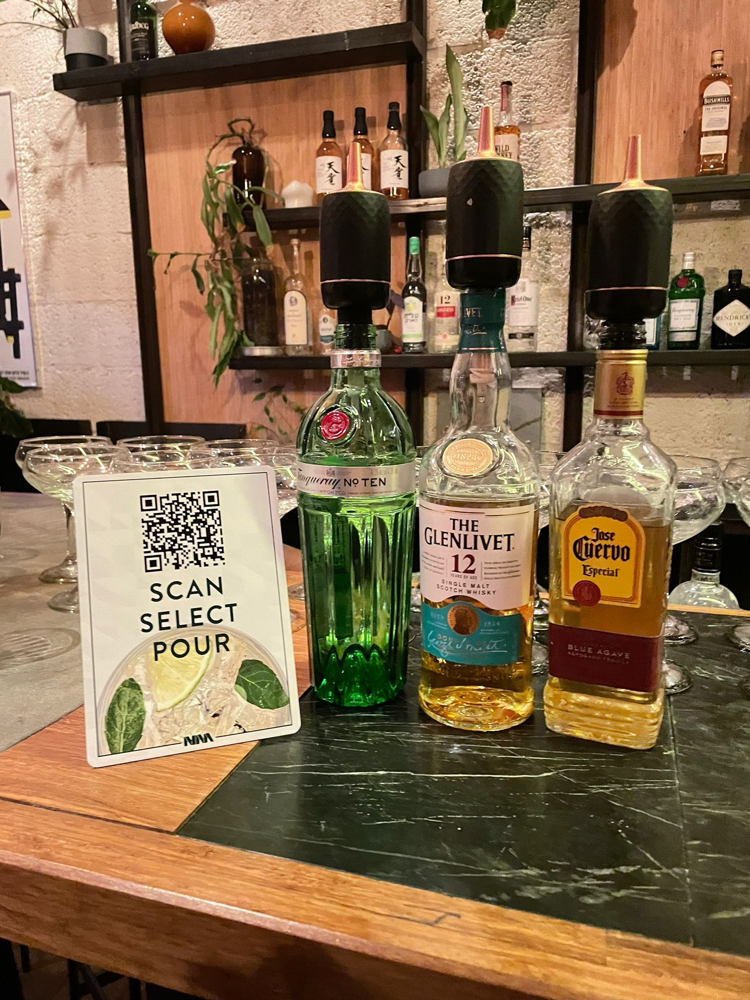
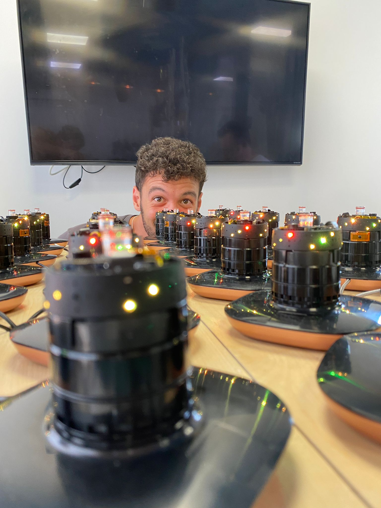
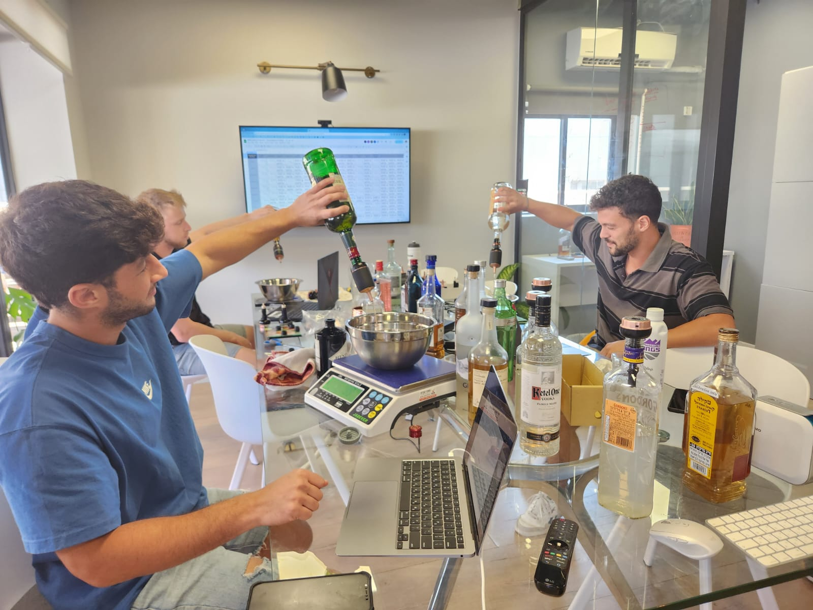

Nina Labs
Junior engineer on a consumer product from prototyping through launch. Worked on mechanical design, test fixture development, and manufacturing optimization across the full development cycle.
The Challenge
Achieving precise liquid flow measurement accuracy in varying environmental conditions. Creating test protocols that simulate real-world usage patterns while balancing design for manufacturability with performance requirements.
The Solution
Implemented data-driven iterative testing process using Python and MATLAB for automated analysis. Optimized mechanical design based on test discoveries, reducing pour variation from 5ml to <1ml while cutting manufacturing costs.
Product Development


Customer setup example

Manufacturing & testing

Team validating design changes
Key Responsibilities
Primary Focus
- • Led iterative testing improving pour accuracy by 80%
- • Designed mechanical test jigs in SolidWorks
- • Developed automated validation protocols with Python/MATLAB
- • Drove design optimization for manufacturability
Technologies & Skills
Solutions & Innovations
- • Implemented data-driven testing process, reducing pour variation from 5ml to <1ml
- • Created automated Python scripts eliminating $8K in manual testing costs
- • Optimized assembly process, reducing build time by 35%
- • Collaborated with cross-functional team to ensure on-time product launch